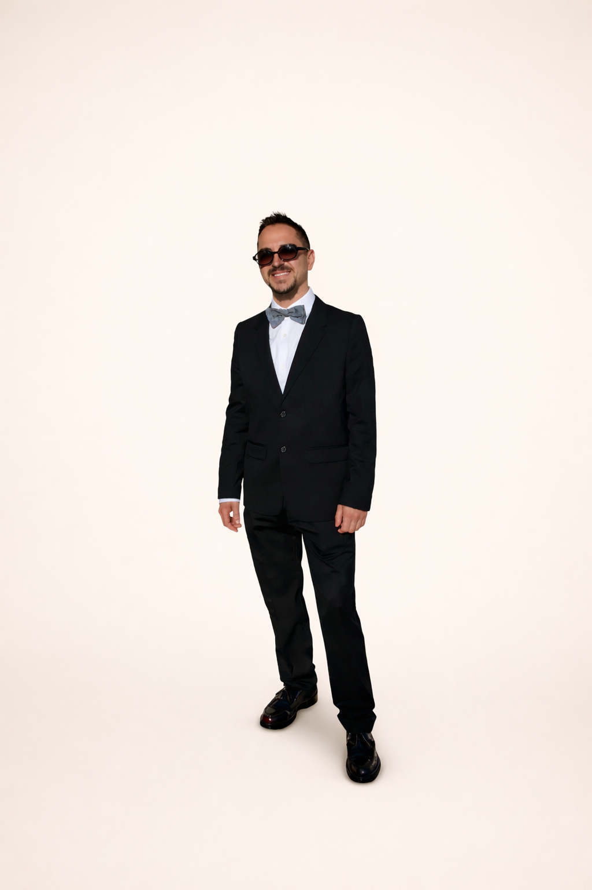
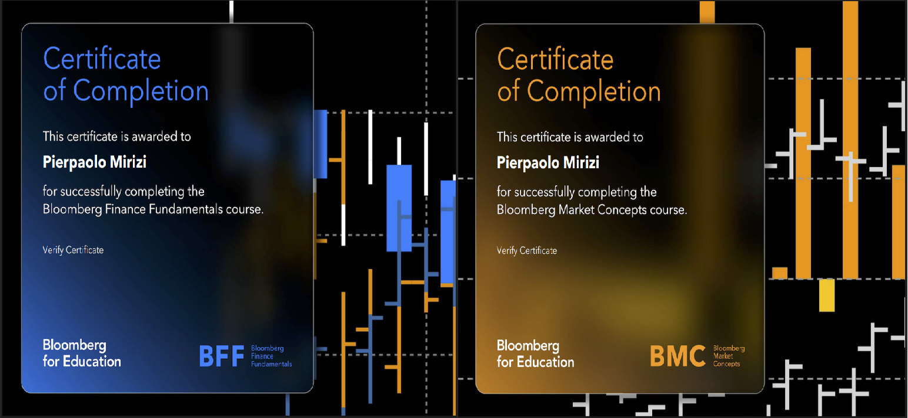
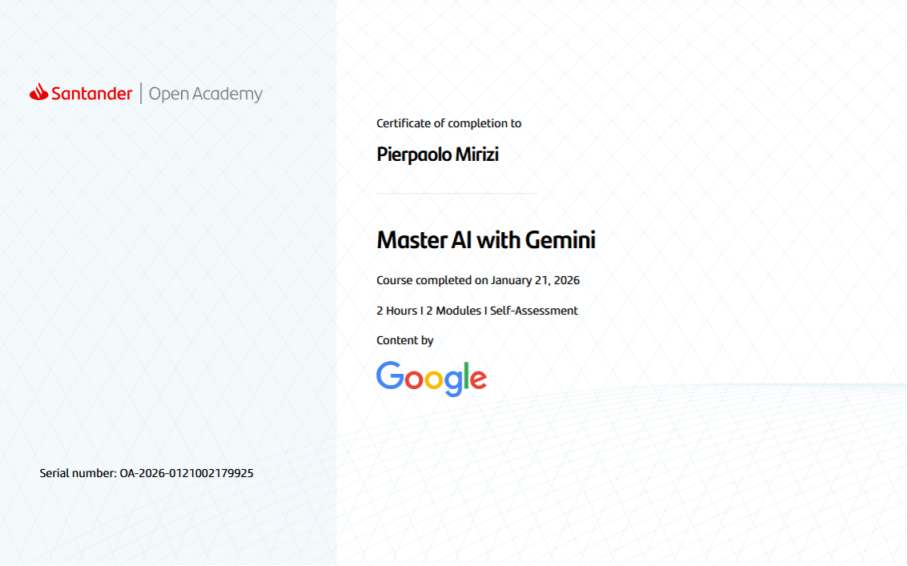

Hi! I am a self-taught finance enthusiast who decided to formalise my capabilities and widen my skills at the University of Sussex. As a mature and energetic third-year student, I am determined to maximise my academic years, deepen my technical knowledge, and refine my communication skills. I relocated from Italy in 2019 to step out of my comfort zone and follow my ambitions. Today, I am on a long-term path to improve financial literacy among the most vulnerable and leverage digital finance for a more equal society.

Alongside my studies, I demonstrate leadership and time management by working part-time as a Team Leader in the hospitality sector. I am actively seeking work experience to gain practical insight into roles related to my studies. While I cannot relocate at this time due to family commitments, I hold a full driving license and am fully available to commute.
I am deeply committed to the university community as the Student Representative for my cohort for the second year in a row. In this role, I act as a liaison between my cohort and the faculty, advocating for student needs and collaborating to improve the academic experience. This responsibility continues to sharpen my negotiation and public speaking skills, while allowing me to network within the faculty and gain deep knowledge of the services available to students.
On a personal level, I enjoy traveling and exploring new places. I recently participated in the departmental Study Trip to Prague, which was a fantastic experience. I had the chance to attend a lecture on monetary policy at Charles University and take a guided tour of the Skoda factory. It provided a valuable opportunity to learn new things, but also to network with fellow students and the faculty members who led the trip.
EMAIL ME LINKEDINI am committed to maximising the value of my academic investment by fully engaging with the university's professional ecosystem. I have gained extensive proficiency with industry-standard instruments, including Bloomberg Terminal, Statista, Fame, and the Financial Times. Utilising these platforms allows me to access reliable data, perform in-depth financial statement analysis, and formulate well-grounded opinions on contemporary economic topics.

I also pursue personal projects in my spare time. I enjoy using AI to accelerate my Python coding, which allows me to consolidate and apply the theoretical knowledge acquired during my course.
I am currently developing a financial application grounded in academic papers and empirical testing. I then validate these strategies in my practice trading account.
Please have a look—I would be happy to receive any feedback!
VIEW MY PROJECT
I define myself as a perpetual learner, constantly seeking to expand my horizons.
I am bilingual (English/Italian) and plan to acquire additional languages after graduation to further broaden my global perspective.
I deeply value diverse viewpoints and alternative approaches to problem-solving. I believe that a broad base of knowledge fosters innovation and allows me to think outside the box.
Recently, I have dedicated myself to mastering Generative AI workflows, aiming to harness the full potential of what I believe to be the defining productivity enhancement of the 21st century.

EMAIL ME LINKEDIN